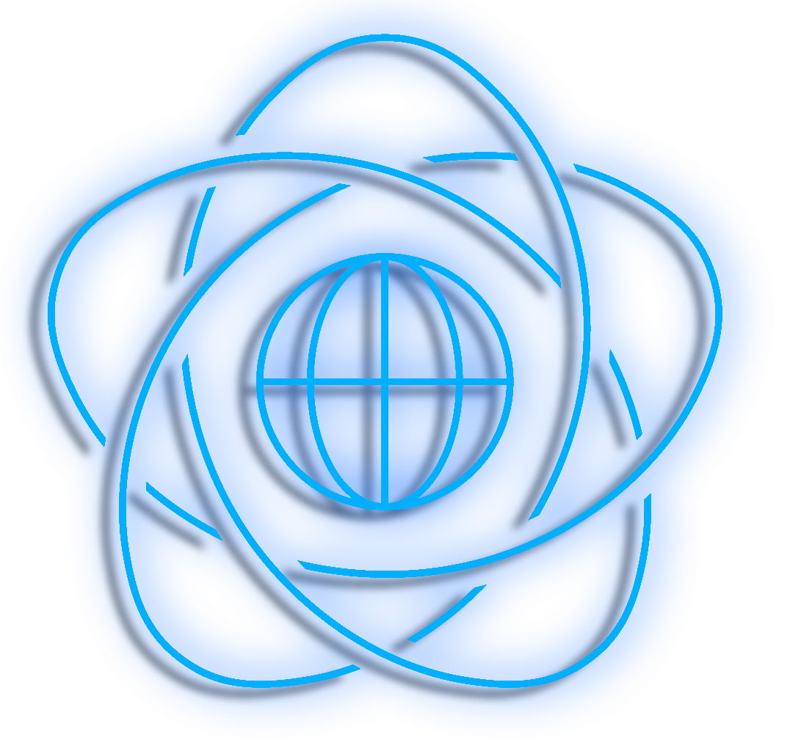

Nowa generacja
szukania sal.
Zdefiniuj swoje potrzeby naukowe, a my dopasujemy idealną przestrzeń.
Wybierz szybki profil:
Krok 1 z 3
Główny cel wizyty
Monitorowanie
Zajętość sal na wydziale w czasie rzeczywistym.
PTI ROCCHIO ALGORITHM LOGS
Uruchomiono aplikację mobilną MiniInfo.